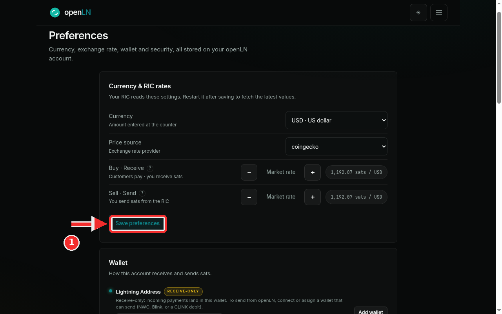
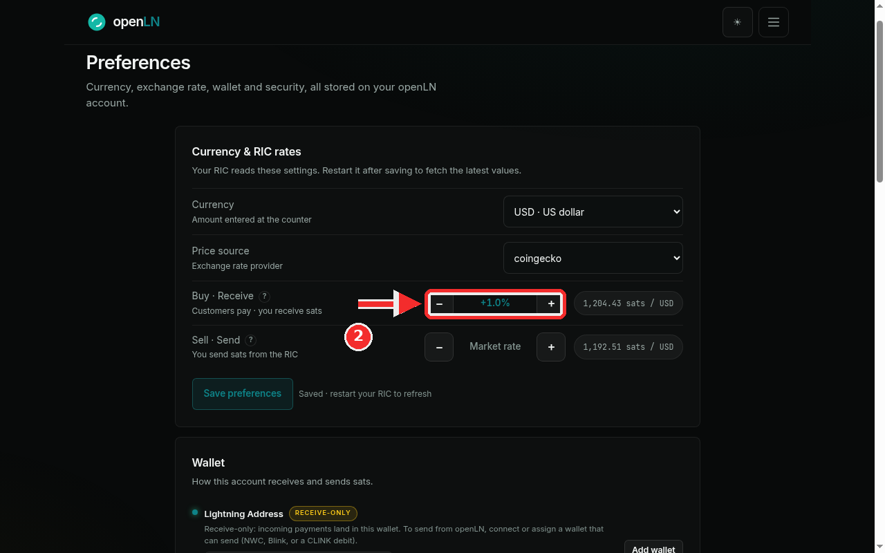

How to set your currency and RIC rates
This guide shows you how to pick the currency your customers see at the counter, and how to set the buy and sell rates your RIC applies when sats change hands. Everything happens in one card on the Preferences page, and the whole thing takes about a minute. The RIC is the device that reads these settings, so you restart it once after saving.
- You are signed in to your openLN account. Open Preferences from the menu (the page is at
/app#settings). - You know which currency you charge in. That is the currency customers see at the counter.
- You have the RIC nearby if you want to watch it adopt the new values, though the restart itself can wait until later.
- Nothing is charged while you change rates, and no funds move.
Pick your currency, the price source, and the rates
On Preferences, find the Currency & RIC rates card. Its subcopy sets the rule for the whole process: "Your RIC reads these settings. Restart it after saving to fetch the latest values." You restart the RIC at the end of this guide.
Currency, labeled "Amount entered at the counter", is the currency customers see at the counter. Choose from ZAR, USD, EUR, THB, GBP, JPY, BTC or sats. This example uses USD · US dollar.
Price source, labeled "Exchange rate provider", is where the live numbers come from. This example uses coingecko, and binance is the other choice.
The two rows below decide how sats are valued. Buy · Receive ("Customers pay · you receive sats") is how sats are valued when customers pay you. Sell · Send ("You send sats from the RIC") is how sats are valued whenever the RIC sends sats out, for example on a withdrawal.
Each row carries the same controls: a minus chip, a plus chip, and a chip in the middle that reads Market rate while no modifier is set. The chip on the right shows the live value, for example 1,192.07 sats / USD. Press the plus or minus chip to move the rate in 0.5 percent steps, so pressing plus twice changes the chip from Market rate to +1.0%. That is exactly what the second screenshot shows on the Buy · Receive row.
The red badge in this screenshot points at Save preferences, the button you press in the next step.

Press Save preferences, then restart your RIC
Press Save preferences at the bottom of the card. When the save goes through, the status line next to the button reads Saved · restart your RIC to refresh, and the values you set are stored on your account.
The screenshot shows the moment after saving: the Buy · Receive row now carries +1.0%, and the live chip on the right has moved to match the modifier. The Sell · Send row is still at Market rate, so it keeps the untouched live rate.
Now restart the RIC. It fetches its currency and rates when it starts, so a restart is what makes the new values appear at the counter. Until the restart, the device keeps showing the values it had before, with the old currency.

- Modifiers stack on the market rate. Every press of plus or minus is a 0.5 percent step and the steps add up, so two presses of plus is +1.0 percent. A row that shows Market rate has no modifier at all: the live rate is used exactly as published.
- The steppers stop at 50 percent in either direction, up or down.
- Prefer an exact number? Click the percent chip on a row and type a value. Enter saves it, Escape cancels, and 0 or empty returns the row to Market rate.
- No guessed rates. If the price lookup fails, the chip says "Rate preview unavailable" and no substitute number appears, so the page never shows a stale rate.
- Custody. Changing rates never moves funds, and openLN never takes custody of your sats. The rates only change how sats are priced.